DEMO_additional_colormaps
Below is a demonstration for:
- Additional colormaps available in GIBBON
Contents
clear; close all; clc;
%Plot settings fontSize=25; % Create example data for visualizations n=150; s=5; [X,Y]=ndgrid(linspace(-4*s,4*s,n)); Z=10*exp( -0.5.*((X./s).^2+(Y./s).^2)); Z(X<0)=-Z(X<0); [F,V,C]=surf2patch(X,Y,Z,Z); colormapset={'gjet','grayjet','graygjet',... 'warmcold','wjet','bloodbone',... 'fireice','che','wcbp',... 'viridis','magma','inferno',... 'plasma','gviridis','igviridis'};
The gibbon color maps
Visualizing all additional color maps
for q=1:1:numel(colormapset) cFigure; gtitle(colormapset{q},fontSize); subplot(1,2,1); hold on; gpatch(F,V,C,'none'); colormap(colormapset{q}); colorbar; axisGeom; camlight headlight; subplot(1,2,2); hold on; imagesc(Z); colormap(colormapset{q}); colorbar; axis tight; axis equal; axis xy; box on; drawnow; end


 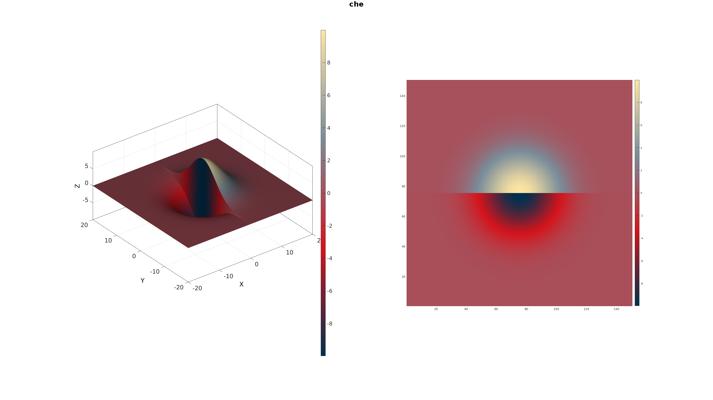 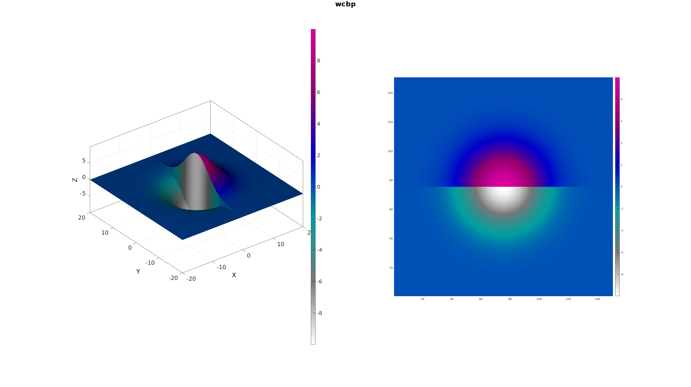 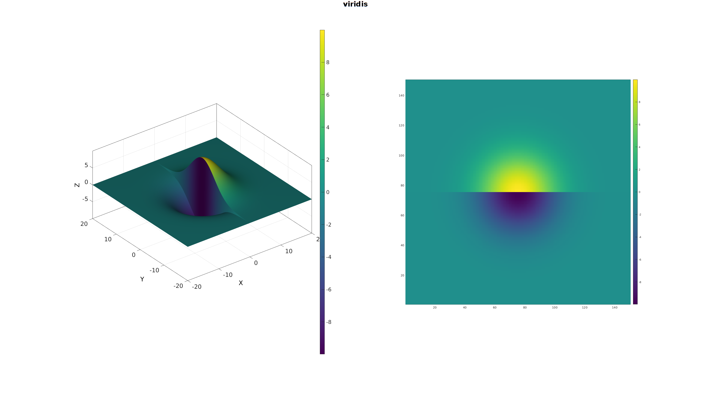 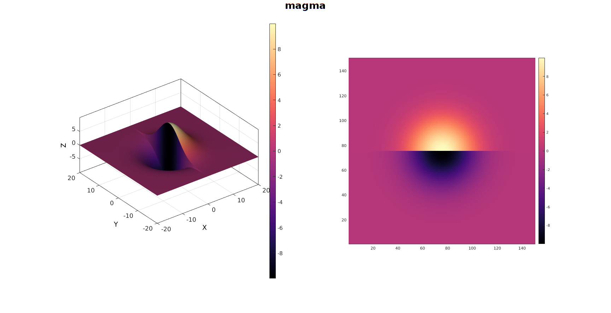 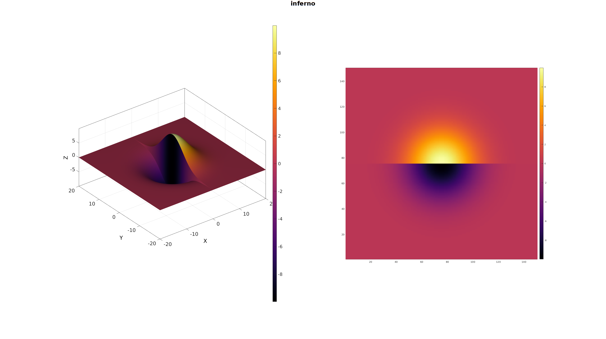 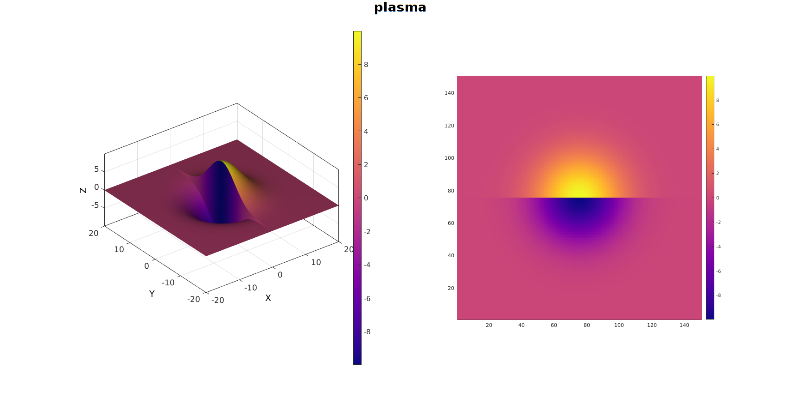 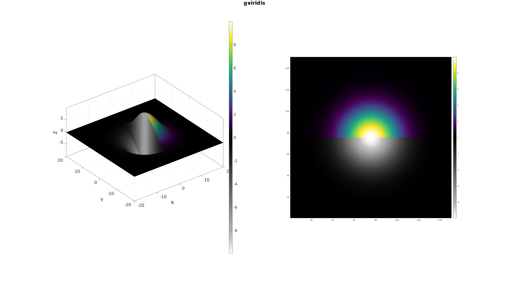 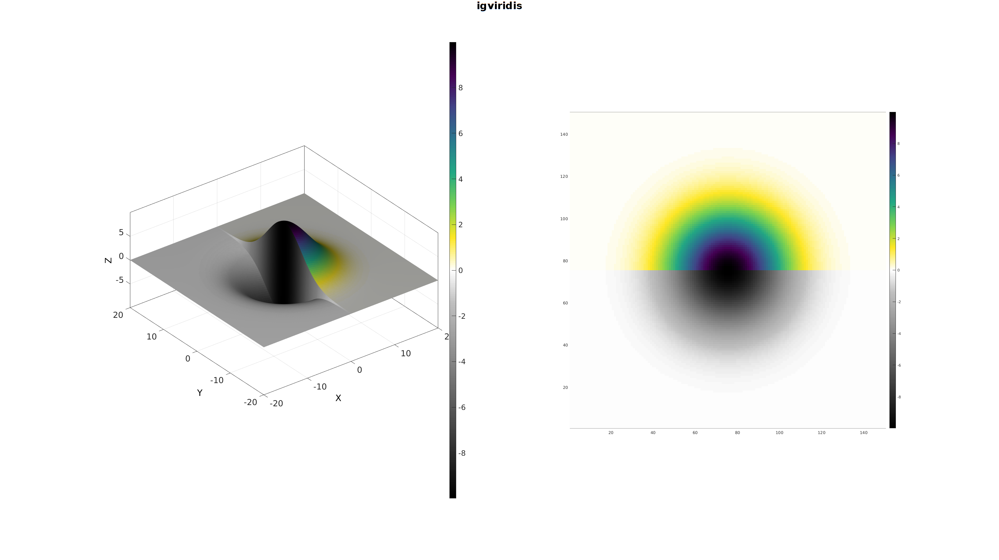
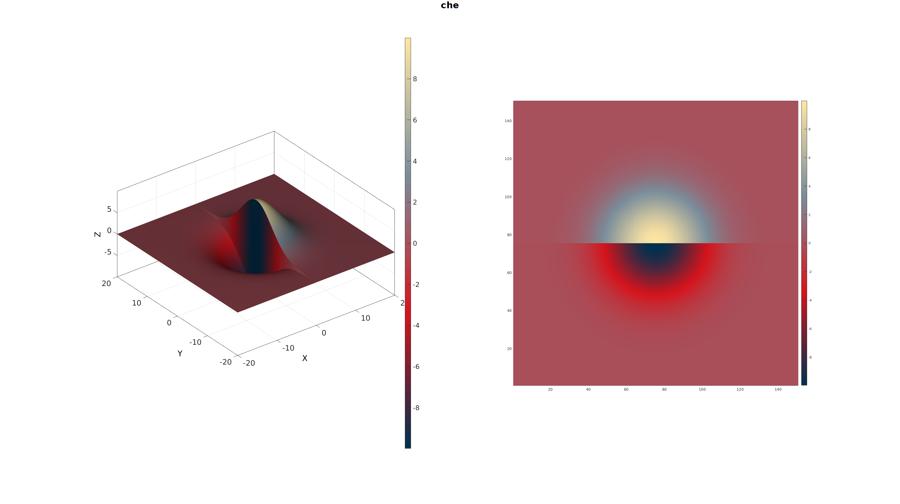 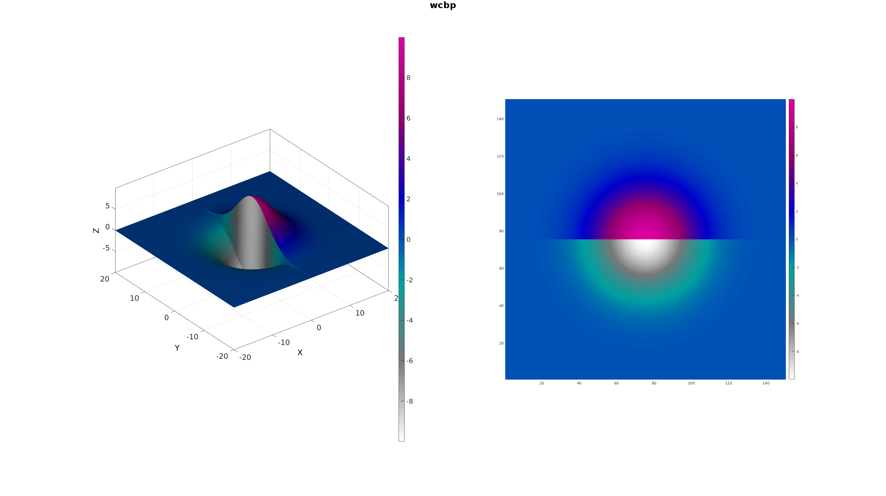 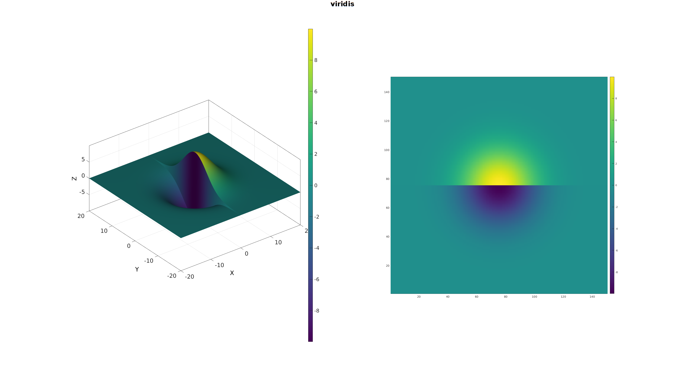 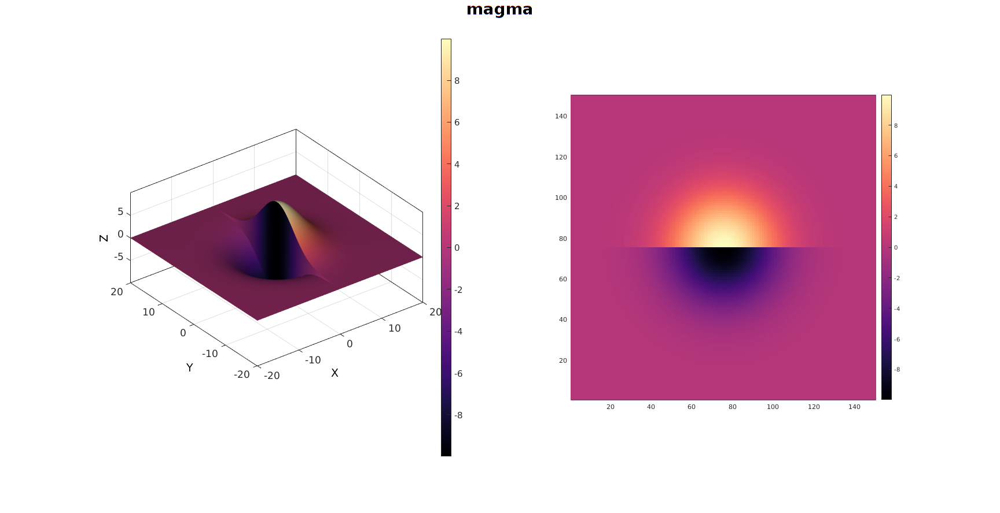 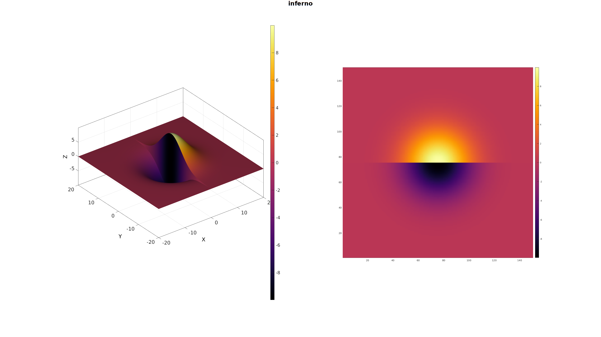 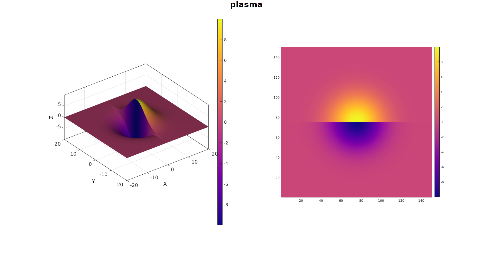 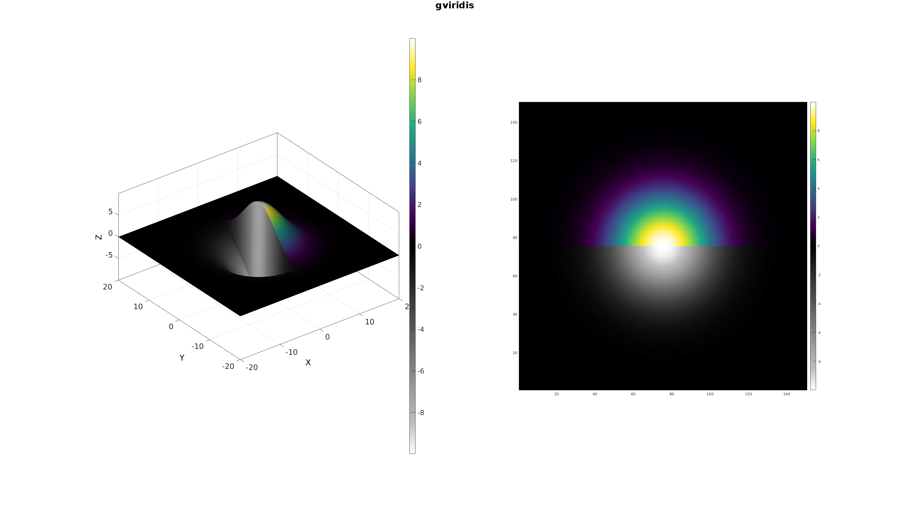 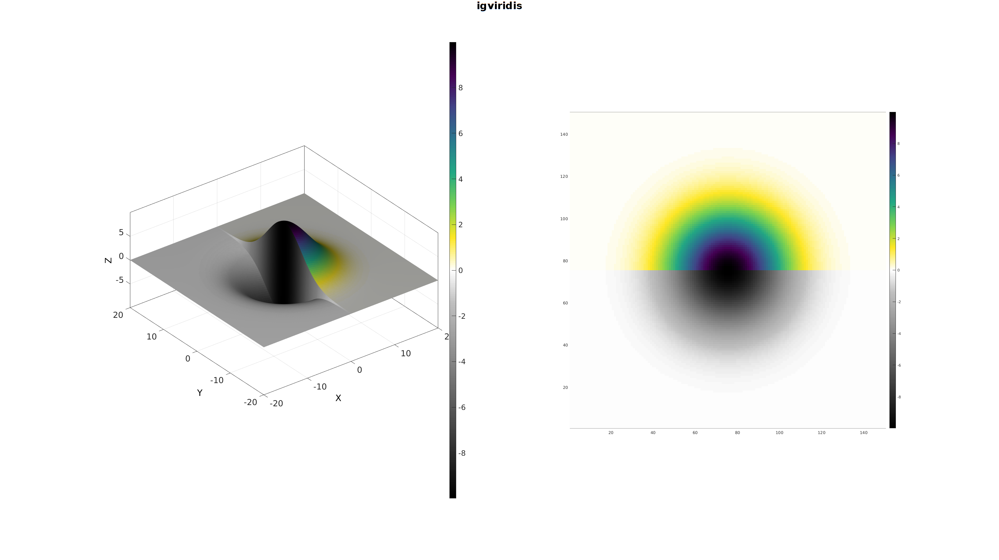 
GIBBON www.gibboncode.org
Kevin Mattheus Moerman, gibbon.toolbox@gmail.com
GIBBON footer text
License: https://github.com/gibbonCode/GIBBON/blob/master/LICENSE
GIBBON: The Geometry and Image-based Bioengineering add-On. A toolbox for image segmentation, image-based modeling, meshing, and finite element analysis.
Copyright (C) 2019 Kevin Mattheus Moerman
This program is free software: you can redistribute it and/or modify it under the terms of the GNU General Public License as published by the Free Software Foundation, either version 3 of the License, or (at your option) any later version.
This program is distributed in the hope that it will be useful, but WITHOUT ANY WARRANTY; without even the implied warranty of MERCHANTABILITY or FITNESS FOR A PARTICULAR PURPOSE. See the GNU General Public License for more details.
You should have received a copy of the GNU General Public License along with this program. If not, see http://www.gnu.org/licenses/.